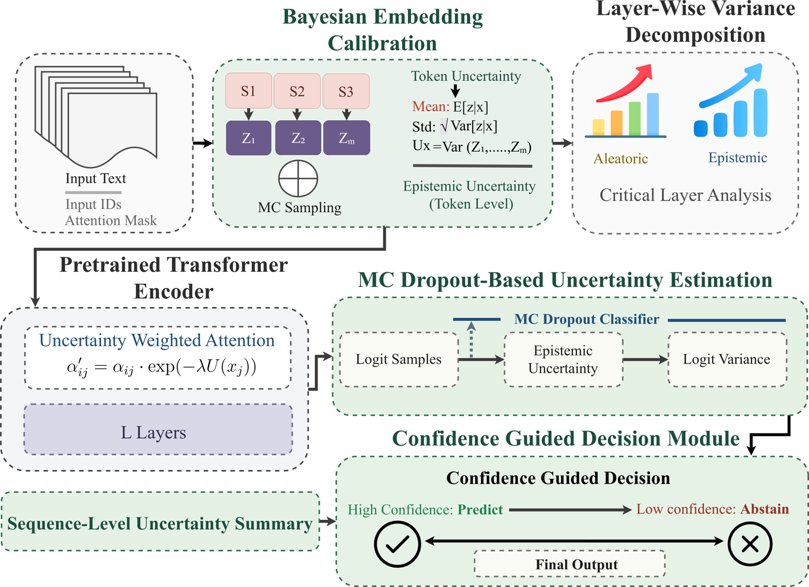

UAT-LITE: Inference-Time Uncertainty-Aware Attention for Pretrained Transformers
Elias Hossain1, Shubhashis Roy Dipta2, Subash Neupane3, Rajib Rana4, Ravid Shwartz-Ziv5, Ivan Garibay1, Niloofar Yousefi1
1University of Central Florida · 2University of Maryland, Baltimore County · 3Meharry Medical College · 4University of Southern Queensland · 5New York University
Post-hoc calibration adjusts output probabilities but leaves internal computation untouched; ensembles and Bayesian methods fix that at real training or storage cost. UAT-LITE injects epistemic uncertainty into attention itself at inference time — no weight updates, no change to the training objective.
Neural NLP models are routinely miscalibrated and overconfident, assigning high confidence to incorrect predictions and expressing no uncertainty at all during internal evidence aggregation. That combination undermines selective prediction and makes high-stakes deployment hard to justify. The existing remedies each give something up.
≈
Post-hoc calibration is skin-deep
Temperature scaling rescales output probabilities globally and does it well, but the internal computation that produced the logits is unchanged. There is no per-token signal and no uncertainty-aware routing — only a sharper or flatter final distribution.
$
Bayesian and ensemble methods cost
Deep ensembles, variational inference, and SNGP improve uncertainty but demand substantial extra training or storage. For an already fine-tuned production checkpoint, retraining to get calibrated confidence is often not on the table.
?
Uncertainty is not localized
A single scalar confidence per prediction says nothing about which tokens were unstable, or where in depth the uncertainty accumulated. That is exactly the diagnostic a practitioner needs when a model fails.
Method
How UAT-LITE works
UAT-LITE estimates token-level epistemic uncertainty from stochastic forward passes with Monte Carlo dropout at the embedding layer, then uses it to modulate self-attention during contextualization. Tokens the model is unsure about are attenuated as sources of evidence rather than trusted equally. Nothing about the pretrained weights or the training objective changes.
α′ij = αij · exp( −λ · U(xj) )
Attention from token i to token j is down-weighted in proportion to the epistemic uncertainty of the key token j, with λ controlling modulation strength.

Figure 1. Overview of UAT-LITE. Token-level epistemic uncertainty is estimated by Monte Carlo sampling at the embedding layer and used to modulate self-attention in a pretrained transformer encoder. A layer-wise variance decomposition attributes predictive uncertainty across depth, and a confidence-guided decision module converts sequence-level uncertainty into a predict-or-abstain choice.
1
Estimate
MC dropout at the embedding layer gives M stochastic representations per token. Token-level epistemic uncertainty is the variance across those samples, computed without touching the pretrained parameters.
2
Modulate
Uncertainty scales attention multiplicatively during contextualization, so unstable tokens contribute less evidence. A Q/K/V ablation isolates where the modulation should be applied.
3
Decompose
A layer-wise variance decomposition diagnoses how predictive uncertainty accumulates across transformer depth. It is purely diagnostic and does not alter the forward pass.
4
Decide
Aggregated stochastic logits drive a confidence-guided decision: predict when confident, abstain when not. Temperature scaling can be applied to the MC-mean logits when calibrated probabilities are required.
Results
Calibration without retraining
Evaluated on SQuAD 2.0 answerability, MNLI, and SST-2 over five seeds with a fine-tuned BERT-base backbone, plus MedQA and PubMedQA as a clinical domain-transfer stress test. Expected Calibration Error uses 15 fixed-width confidence bins.
Method
SQuAD
MNLI
SST-2
Avg ECE ↓
BERT-base
0.1868
0.0816
0.0531
0.1072
MC Dropout (uniform)
0.173
0.090
0.039
0.101
Deep Ensemble (5)
0.168
0.060
0.037
0.089
Global MC Dropout
0.1600
0.0565
0.0501
0.0889
UAT-LITE
0.1647
0.0638
0.0608
0.0964
Base + TS
0.0788
0.0148
0.0163
0.0366
UAT-LITE + TS
0.0760
0.0201
0.0191
0.0384
Table 1. In-domain ECE (lower is better), mean over five seeds, M = 10. UAT-LITE improves on the fine-tuned baseline (0.1072 → 0.0964) while preserving accuracy, and UAT-LITE + TS reaches the best SQuAD ECE of any method here. Temperature scaling remains the strongest single lever for marginal ECE, and the paper says so plainly — UAT-LITE's contribution is uncertainty-aware internal routing and token-level diagnostics, which TS cannot provide at all.
Method
ID ECE ↓
OOD ECE ↓
Avg ECE ↓
ID Acc ↑
OOD Acc ↑
Base
0.0809
0.0555
0.0682
0.7162
0.7459
Base + TS
0.0147
0.0208
0.0177
0.7162
0.7459
Global MC Dropout
0.0586
0.0334
0.0460
0.7090
0.7398
UAT-LITE
0.0650
0.0402
0.0526
0.7099
0.7395
UAT-LITE + TS
0.0163
0.0199
0.0181
0.7105
0.7394
Table 2. Distribution-shift robustness on MNLI (matched → mismatched), mean over five seeds. UAT-LITE cuts average ECE from 0.0682 to 0.0526, roughly a 23% relative reduction, at accuracy within 0.6 points of the base model. UAT-LITE + TS gives the smallest ID-to-OOD calibration gap of any configuration (0.0035), which is the property that matters when the deployment distribution is not the training one.
Q
Where to modulate
A Q/K/V ablation at λ = 0.5 finds K-only lowest in ECE on SST-2 and MNLI but sharply damaging to SQuAD accuracy; Q-only gives the most consistent trade-off across tasks; V-only best preserves accuracy; and modulating all three can over-regularize.
⇕
Depth-wise attribution
The layer-wise variance decomposition separates aleatoric from epistemic contributions across depth, identifying which layers drive predictive uncertainty. This is a diagnostic no output-level calibration method can produce.
⚕
Clinical transfer
MedQA and PubMedQA serve as a domain-transfer stress test beyond the general NLP suites, reported with ECE and accuracy side by side rather than calibration alone.
Limitations
What this does not claim
The paper is deliberate about not overselling the method against a very strong and very cheap baseline.
T
Temperature scaling wins on marginal ECE
For the single goal of minimizing marginal calibration error in-domain, temperature scaling is stronger and far cheaper than modulating attention. UAT-LITE is not positioned as a replacement; the most reliable configuration in these evaluations is UAT-LITE + TS, which combines them.
λ
Sensitivity is modest but real
ECE varies within a narrow band (range under 0.007) across the settings swept, with negligible accuracy change, and the Q/K/V choice matters more than it might appear — K-only trades SQuAD accuracy for calibration gains elsewhere.
⚠
Reading the tables honestly. SNGP records a lower in-domain average ECE than UAT-LITE, and temperature scaling is close behind at a fraction of the cost. The case for UAT-LITE is not that it wins the ECE column outright: it is that it delivers uncertainty-aware internal routing, token-level signals, and depth-wise attribution on a frozen checkpoint, none of which output-level rescaling can offer, and that it composes with TS rather than competing with it.
Citation
Cite UAT-LITE
If you find UAT-LITE or the layer-wise variance decomposition useful in your research, please consider citing the paper.
@article{hossain2026uatlite,
title = {UAT-LITE: Inference-Time Uncertainty-Aware Attention
for Pretrained Transformers},
author = {Hossain, Elias and Dipta, Shubhashis Roy
and Neupane, Subash and Rana, Rajib
and Shwartz-Ziv, Ravid and Garibay, Ivan
and Yousefi, Niloofar},
year = {2026},
journal = {arXiv preprint arXiv:2602.02952},
eprint = {2602.02952},
archivePrefix = {arXiv},
}